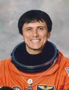

Lyndon B. Johnson Space Center
Houston, Texas 77058
|
National Aeronautics and Space Administration Lyndon B. Johnson Space Center Houston, Texas 77058 |
 |
Biographical Data |
||
FRANKLIN R. CHANG-DÍAZ (PH.D.)
NASA ASTRONAUT (FORMER)
PERSONAL DATA: Born April 5, 1950, in San José, Costa Rica, to the late Mr. Ramón A. Chang-Morales and Mrs. María Eugenia Díaz De Chang. Married to the former Peggy Marguerite Doncaster of Alexandria, Louisiana. Four children. He enjoys music, glider planes, soccer, scuba diving and hiking. His mother, brothers and sisters still reside in Costa Rica.
EDUCATION: Graduated from Colegio De La Salle in San José, Costa Rica, in November 1967 and from Hartford High School in Hartford, Connecticut, in 1969; received a Bachelor of Science degree in mechanical engineering from the University of Connecticut in 1973 and a Doctorate in Applied Plasma Physics from the Massachusetts Institute of Technology (MIT) in 1977.
SPECIAL HONORS: Recipient of the University of Connecticut’s Outstanding Alumni Award (1980); seven NASA Space Flight Medals (1986, 1989, 1992, 1994, 1996, 1998, 2002); two NASA Distinguished Service Medals (1995, 1997) and three NASA Exceptional Service Medals (1988, 1990, 1993). In 1986, he received the Liberty Medal from President Ronald Reagan at the Statue of Liberty Centennial Celebration in New York City and, in 1987, the Medal of Excellence from the Congressional Hispanic Caucus. He received the Cross of the Venezuelan Air Force from President Jaime Lusinchi during the 68th Anniversary of the Venezuelan Air Force in Caracas, Venezuela (1988), and the Flight Achievement Award from the American Astronautical Society (1989). Recipient of four Doctorates “Honoris Causa” (Doctor of Science from the Universidad Nacional de Costa Rica, Doctor of Science from the University of Connecticut, Doctor of Law from Babson College and Doctor of Science from the Universidade de Santiago de Chile. He is honorary faculty at the College of Engineering, University of Costa Rica. In April 1995, the government of Costa Rica conferred on him the title of “Honorary Citizen.” This is the highest honor Costa Rica confers to a foreign citizen, making him the first such honoree who was actually born there. Recipient of the American Institute of Aeronautics and Astronautics 2001 Wyld Propulsion Award for his 21 years of research on the Variable Specific Impulse Magnetoplasma Rocket (VASIMR) engine.
EXPERIENCE: While attending the University of Connecticut, he also worked as a research assistant in the Physics Department and participated in the design and construction of high-energy atomic collision experiments. Following graduation in 1973, he entered graduate school at MIT, becoming heavily involved in the United States’ controlled fusion program and doing intensive research in the design and operation of fusion reactors. He obtained his Doctorate in the field of Applied Plasma Physics and fusion technology and, in that same year, joined the technical staff of the Charles Stark Draper Laboratory. His work at Draper was geared strongly toward the design and integration of control systems for fusion reactor concepts and experimental devices in both inertial and magnetic confinement fusion. In 1979, he developed a novel concept to guide and target fuel pellets in an inertial fusion reactor chamber. Later on, he was engaged in the design of a new concept in rocket propulsion, based on magnetically confined high temperature plasmas. As a visiting scientist with the MIT Plasma Fusion Center, from October 1983 to December 1993, he led the plasma propulsion program there to develop this technology for future human missions to Mars. From December 1993 to July 2005, Dr. Chang-Díaz served as Director of the Advanced Space Propulsion Laboratory at the Johnson Space Center, where he continued his research on plasma rockets. He is an Adjunct Professor of Physics at Rice University and the University of Houston and has presented numerous papers at technical conferences and in scientific journals.
In addition to his main fields of science and engineering, he worked for 2-1/2 years as a house manager in an experimental community residence for de-institutionalizing chronic mental patients, and was heavily involved as an instructor/advisor with a rehabilitation program for Hispanic drug abusers in Massachusetts.
Dr. Chang-Díaz retired from NASA in July 2005.
NASA EXPERIENCE: Selected by NASA in May 1980, Dr. Chang-Díaz became an astronaut in August 1981. While undergoing astronaut training, he was also involved in flight software checkout at the Shuttle Avionics Integration Laboratory (SAIL) and participated in the early space station design studies. In late 1982, he was designated as support crew for the first Spacelab mission and, in November 1983, served as in-orbit Capsule Communicator (CAPCOM) during that flight. From October 1984 to August 1985, he was leader of the astronaut support team at Kennedy Space Center, Florida. His duties included astronaut support during the processing of the various vehicles and payloads as well as flight crew support during the final phases of the launch countdown. He has logged more than 1,800 hours of flight time, including 1,500 hours in jet aircraft.
Dr. Chang-Díaz was instrumental in implementing closer ties between the astronaut corps and the scientific community. In January 1987, he started the Astronaut Science Colloquium Program and later helped form the Astronaut Science Support Group, which he directed until January 1989.
A veteran of seven spaceflights, STS 61-C (1986), STS-34 (1989), STS-46 (1992), STS-60 (1994), STS-75 (1996), STS-91 (1998) and STS-111 (2002), he has logged more than 1,601 hours in space, including 19 hours and 31 minutes in three spacewalks.
SPACEFLIGHT EXPERIENCE: STS 61-C (January 12 to January 18, 1986) was launched from Kennedy Space Center on space shuttle Columbia. STS 61-C was a six-day flight, during which Dr. Chang-Díaz participated in the deployment of the SATCOM KU satellite, conducted experiments in astrophysics and operated the materials processing laboratory MSL-2. Following 96 orbits of the Earth, Columbia and her crew made a successful night landing at Edwards Air Force Base, California. Mission duration was 146 hours, 3 minutes and 51 seconds.
On STS-34 (October 18 to October 23, 1989) The crew aboard space shuttle Atlantis successfully deployed the Galileo spacecraft on its journey to explore Jupiter, operated the Shuttle Solar Backscatter Ultraviolet Instrument (SSBUV) to map atmospheric ozone and performed numerous secondary experiments involving radiation measurements, polymer morphology, lightning research, microgravity effects on plants and a student experiment on ice crystal growth in space. STS-34 launched from Kennedy Space Center and landed at Edwards Air Force Base. Mission duration was 119 hours and 41 minutes and was accomplished in 79 orbits of the Earth.
STS-46 (July 31 to August 8, 1992) was an eight-day mission, during which crew members deployed the European Retrievable Carrier (EURECA) satellite and conducted the first Tethered Satellite System (TSS) test flight. Mission duration was 191 hours, 16 minutes and 7 seconds. Space shuttle Atlantis and her crew launched and landed at the Kennedy Space Center after completing 126 orbits of the Earth in 3.35 million miles.
STS-60 (February 3 to February 11, 1994) was the first flight of the Wake Shield Facility (WSF-1), the second flight of the Space Habitation Module-2 (Spacehab-2) and the first joint U.S./Russian space shuttle mission on which a Russian cosmonaut was a crew member. During the eight-day flight, the crew aboard space shuttle Discovery conducted a wide variety of biological materials science, Earth observation and life science experiments. STS-60 launched and landed at Kennedy Space Center. The mission achieved 130 orbits of Earth in 3,439,705 miles.
STS-75 (February 22 to March 9, 1996) was a 15-day mission with principal payloads being the reflight of the Tethered Satellite System (TSS) and the third flight of the United States Microgravity Payload (USMP-3). The TSS successfully demonstrated the ability of tethers to produce electricity. The TSS experiment produced a wealth of new information on the electrodynamics of tethers and plasma physics before the tether broke at 19.7 km, just shy of the 20.7 km goal. The crew also worked around the clock performing combustion experiments and research related to USMP-3 microgravity investigations used to improve the production of medicines, metal alloys and semiconductors. The mission was completed in 252 orbits, covering 6.5 million miles in 377 hours and 40 minutes.
STS-91 Discovery (June 2 to June 12, 1998) was the ninth and final shuttle-Mir docking mission and marked the conclusion of the highly successful joint U.S./Russian Phase I program. The crew, including a Russian cosmonaut, performed logistics and hardware resupply of the Mir during four docked days. They also conducted the Alpha Magnetic Spectrometer experiment, which involved the first-of-its-kind research of antimatter in space. Mission duration was 235 hours and 54 minutes.
STS-111 Endeavour (June 5 to June 19, 2002) delivered a new International Space Station resident crew and a Canadian-built mobile base for the orbiting outpost’s robotic arm. The crew also performed late-notice repair of the station’s robotic arm by replacing one of the arm’s joints. It was the second space shuttle mission dedicated to delivering research equipment to the space platform. Dr. Chang- Díaz performed three spacewalks to help install the Canadian Mobile Base System to the station’s robotic arm. STS-111 also brought home the Expedition 4 crew from their six-and-a-half-month stay aboard the station. Mission duration was 13 days, 20 hours and 35 minutes. Unacceptable weather conditions in Florida necessitated a landing at Edwards Air Force Base, California.
SEPTEMBER 2012
This is the only version available from NASA. Updates must be sought directly from the above named individual.